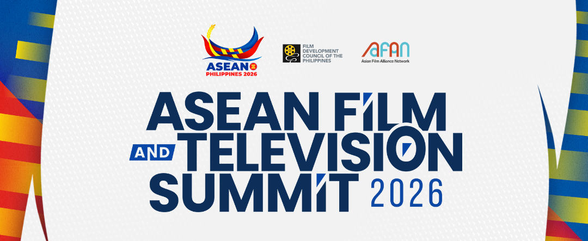
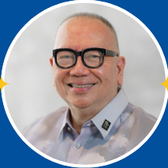
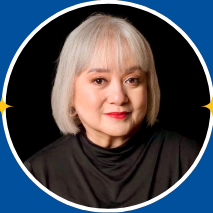
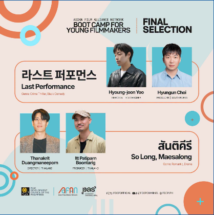
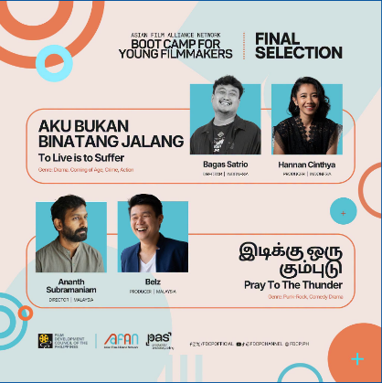
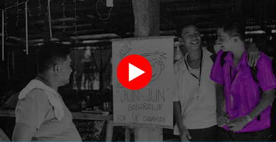

A regional gathering for national film bodies, producers, streamers, cultural institutions, and industry leaders shaping the next phase of Southeast Asian screen collaboration.
The summit is arranged as a practical industry sequence: public-facing talks, focused AFAN sessions, and screenings that connect new work to the people who can move it across borders.
Organized by FDCP in collaboration with AFAN, the summit creates space for policy leaders and industry practitioners to align around financing, distribution, adaptation, audience development, and cross-market collaboration.
This discussion examines intellectual property as a living asset that can move across film, comics, literature, games, brand partnerships, and other visual works. The goal is to unlock new production models and stronger income potential for original Asian stories.
Speaker details can be swapped in as confirmations arrive. The layout is designed to stay polished with two, three, or four profiles without relying on a cramped horizontal carousel.


The AFAN Boot Camp gathers selected young filmmakers for focused mentorship, peer exchange, and regional network-building during the summit week.


Curated screenings and talkbacks connect audiences with filmmakers, programmers, and cultural partners. Replace the temporary titles below once the official slate is confirmed.

Synopsis and screening notes can sit here. Keep this copy short enough to scan quickly, then point visitors to the ticket or detail page for the full program note.
Use this area for the official description, guest attendance note, runtime, language, or talkback details when available.